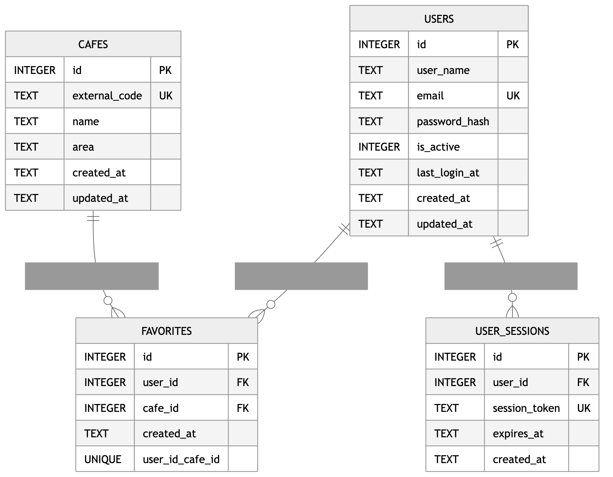

DOCUMENT 08
データベース設計書
ER図
ER図 必須
テーブル間のリレーション図（テキストベースまたは画像で記載）

テーブル間のリレーション説明
| リレーション | 内容 |
|---|---|
| USERS → FAVORITES | 1人のユーザーは、0件以上のお気に入りを登録できる |
| CAFES → FAVORITES | 1つのカフェは、0件以上のユーザーからお気に入り登録される |
| USERS → USER_SESSIONS | 1人のユーザーは、0件以上のログインセッションを持つ |
外部キー
| テーブル | カラム | 参照先 |
|---|---|---|
| FAVORITES | user_id | USERS.id |
| FAVORITES | cafe_id | CAFES.id |
| USER_SESSIONS | user_id | USERS.id |
補足: FAVORITES テーブルでは、UNIQUE(user_id, cafe_id) を設定することで、同じユーザーが同じカフェを重複してお気に入り登録できないようにしている。
テーブル定義
テーブル名：users 必須
テーブルの目的：ユーザーアカウント情報を管理する。
| カラム名 | データ型 | NULL | デフォルト | 制約 | 説明 |
|---|---|---|---|---|---|
| id | BIGINT | NO | AUTO_INCREMENT | PK | 主キー |
| user_name | VARCHAR(50) | NO | - | NOT NULL | ユーザー表示名 |
| VARCHAR(255) | NO | - | UNIQUE, NOT NULL | ログイン用メールアドレス | |
| password_hash | VARCHAR(255) | NO | - | NOT NULL | ソルト付きパスワードハッシュ |
| is_active | TINYINT(1) | NO | 1 | NOT NULL | 有効フラグ（1:有効） |
| last_login_at | DATETIME | YES | NULL | - | 最終ログイン日時 |
| created_at | DATETIME | NO | CURRENT_TIMESTAMP | NOT NULL | 作成日時 |
| updated_at | DATETIME | NO | CURRENT_TIMESTAMP | NOT NULL | 更新日時 |
テーブル名：cafes 必須
テーブルの目的：カフェの基本マスタ情報を管理する。
| カラム名 | データ型 | NULL | デフォルト | 制約 | 説明 |
|---|---|---|---|---|---|
| id | BIGINT | NO | AUTO_INCREMENT | PK | 主キー |
| external_code | VARCHAR(100) | NO | - | UNIQUE, NOT NULL | 画面側IDと連携する外部コード（例：cafe-1） |
| name | VARCHAR(120) | NO | - | NOT NULL | カフェ名 |
| area | VARCHAR(80) | YES | NULL | - | エリア名 |
| created_at | DATETIME | NO | CURRENT_TIMESTAMP | NOT NULL | 作成日時 |
| updated_at | DATETIME | NO | CURRENT_TIMESTAMP | NOT NULL | 更新日時 |
テーブル名：favorites 必須
テーブルの目的：ユーザーとカフェのお気に入り関係を管理する。
| カラム名 | データ型 | NULL | デフォルト | 制約 | 説明 |
|---|---|---|---|---|---|
| id | BIGINT | NO | AUTO_INCREMENT | PK | 主キー |
| user_id | BIGINT | NO | - | FK, NOT NULL | users.id 参照 |
| cafe_id | BIGINT | NO | - | FK, NOT NULL | cafes.id 参照 |
| created_at | DATETIME | NO | CURRENT_TIMESTAMP | NOT NULL | 登録日時 |
| 複合制約 | - | - | - | UNIQUE(user_id, cafe_id) | 同一ユーザーの重複お気に入り防止 |
テーブル名：user_sessions 必須
テーブルの目的：ログインセッション情報を管理する。
| カラム名 | データ型 | NULL | デフォルト | 制約 | 説明 |
|---|---|---|---|---|---|
| id | BIGINT | NO | AUTO_INCREMENT | PK | 主キー |
| user_id | BIGINT | NO | - | FK, NOT NULL | users.id 参照 |
| session_token | CHAR(64) | NO | - | UNIQUE, NOT NULL | セッショントークン |
| expires_at | DATETIME | NO | - | NOT NULL | 有効期限 |
| created_at | DATETIME | NO | CURRENT_TIMESTAMP | NOT NULL | 作成日時 |
補足
本システムの実装DBは SQLite を使用しているが、提出用資料では一般的なデータベース設計書として分かりやすくするため、BIGINT、VARCHAR、DATETIME などのSQL型を用いて記載している。
インデックス設計
インデックス一覧 必須
| テーブル名 | インデックス名 | 対象カラム | 種類 | 設定理由 |
|---|---|---|---|---|
| users | uk_users_email | UNIQUE | ログイン時にメールアドレスでユーザー検索を行うため（重複防止も兼ねる） | |
| cafes | uk_cafes_external_code | external_code | UNIQUE | 画面側の cafeCode でカフェを特定・UPSERTするため |
| favorites | uk_favorites_user_cafe | user_id, cafe_id | UNIQUE | 同一ユーザーの同一カフェ重複登録を防止し、存在判定を高速化するため |
| favorites | idx_favorites_user_id | user_id | INDEX | ユーザー別お気に入り一覧取得（WHERE user_id = ?）を高速化するため |
| favorites | idx_favorites_cafe_id | cafe_id | INDEX | カフェ起点の参照・結合処理を高速化するため |
| user_sessions | uk_user_sessions_token | session_token | UNIQUE | API認証時にセッショントークンを一意検索するため |
| user_sessions | idx_user_sessions_user_id | user_id | INDEX | ユーザー単位のセッション管理・削除を効率化するため |
| user_sessions | idx_user_sessions_expires_at | expires_at | INDEX | 期限切れセッション検索や定期削除処理を効率化するため |
補足: 上記インデックス定義は、db/schema.sql の実装内容に合わせて作成している。検索頻度の高いカラムや、ログイン認証・お気に入り管理・セッション管理で利用されるカラムに対してインデックスを設定し、検索性能およびデータ整合性を向上させている。
初期データ
マスタデータ・テストデータ 必須
初期投入するデータ（カテゴリマスタ、管理者ユーザー等）
-- Cafe Navi 初期データ（マスタデータ）
USE cafe_navi;
-- カフェマスタ初期投入
INSERT INTO cafes (external_code, name, area)
VALUES
('cafe-1', 'スターバックス渋谷ツタヤ店', '渋谷'),
('cafe-2', 'ブルーボトルコーヒー六本木', '六本木'),
('cafe-3', 'カフェ・ルミエール池袋', '池袋'),
('cafe-4', 'コーヒースタンド神保町', '神保町'),
('cafe-5', 'ノマドベース新宿南口', '新宿'),
('cafe-6', 'ミドリカフェ秋葉原', '秋葉原'),
('cafe-7', 'ワークカフェ品川', '品川'),
('cafe-8', 'サニーコーヒー中野', '中野'),
('cafe-9', 'ブリーズカフェ恵比寿', '恵比寿'),
('cafe-10', 'モーニングロースト目黒', '目黒'),
('cafe-11', 'クラフトビーンズ吉祥寺', '吉祥寺')
ON DUPLICATE KEY UPDATE
name = VALUES(name),
area = VALUES(area);
補足: 実装上、ユーザー・セッション・お気に入りは運用中に生成されるため、初期投入の必須対象は cafes マスタです。